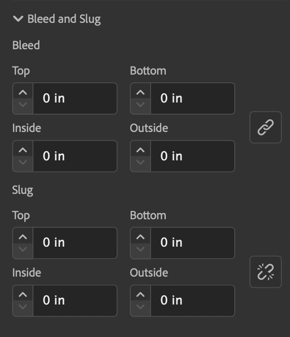
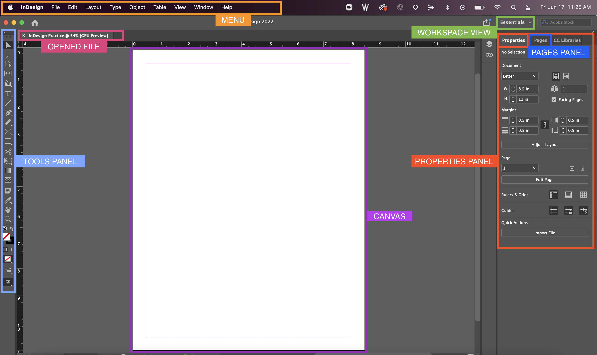
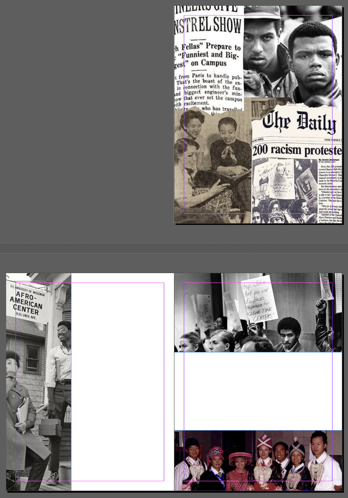

Creating Documents with InDesign: Layout and Type
The Basics
Creating a New Project
To create a new document in InDesign:
- Open InDesign
- Click on the blue "New file" button on the left
- If you do not see the Preset Menu on the right, click on "Print" from the top of the New Document pop-up
Measurements!
By default, your new project will be in picas, a standard unit of measurement often used by graphic designers. However, you will probably feel more comfortable in either inches or centimeters, so make sure you change the units before you begin your project. For this project, we will be using inches!
- From the Present Menu on the right, enter the document specifications as needed for your project. For our in-class practice project, enter the specifications listed below

- Dimensions: 8x11.5 Inches
- Orientation: Portrait
Check “Facing pages”
Facing Pages makes left and right pages face each other in a double-page spread, generally for print materials like magazines and books. Deselecting this option will allow each page to stand alone, such as when you’re designing flyers or posters.
Pages: 1 (we will add more later)
Number of Pages specifies how many pages the document will start out with. You can always add additional pages once the document is created.
Start # 1
Start Page # is useful for page numbering. It defaults to 1. If you prefer the page numbering to start on 692, for example, you can do so by typing the numerical value in this section.
- Columns: 1
- Margins: .5 for all
- Bleed and Slug: 0 for all
What is Bleed?
Ever notice how magazines or posters usually have colors extend to the very edge of a page? A bleed allows for color to be printed a tiny bit beyond the designated cut line of a project to ensure no white space is kept along the edge of a final project. Bleed area is shown by a red line on the InDesign document.
The InDesign Interface
We’ll start by getting familiar with the InDesign workspace.
The InDesign workspace includes features common to other Adobe applications like Photoshop or Illustrator, such as the Tools Panel, Menu, and Properties Panel. You can find the different interface areas labeled in the image below:
Interface Components
Here we'll explore the layout of the program itself. The different areas of InDesign are defined and summarized here, so if you get lost later in the manual you can always refer back to this section. The terminology here also applies to other Adobe design software like Photoshop and Illustrator.

Menu Bar
The Menu bar contains File, Edit, Window and other menus. These menus allow you to find and apply more tools and techniques to your project should you need them. We will cover a few of these as needed for our practice project.
Opened File (Document Window)
After you create a new document or open an existing document in InDesign, it will appear in this area called the Document Window. If you have multiple files opened, each file appears as a tab in this Document Window.
Workspace View
Different workspace views bring up different tools and panels that may be most productive for a specific kind of project. The Essentials workspace view is selected by default, and is usually a great option for most projects. However, you can change this to be set to any workspace that you feel would be most beneficial. For this practice project, we will stick to Essentials.
Accidently moved or got rid of a panel? Go to this Workspace View and select "Reset [Workspace]" to bring back all the original panels. This name changes based on what workspace you are currently selected on.
Tools panel
The Tools Panel contains tools used to create and modify objects on our project. To select a tool, simply click it. Tools with a triangle in the lower-right corner have additional tools hidden beneath them. To display hidden tools, click and hold a tool icon; a drop-down menu showing the hidden tools will appear.
Canvas (Page)
The Canvas area displays the page(s) that will contain all text, shapes, and images to be saved and/or printed for your project.
Properties Panel
The Properties panel is a one-stop shop for additional tools that may be helpful as you work on your project. This panel changes depending on the current tool or object you are selected on. When selected on just the canvas (page), this panel will give you the options to change your document size, margins, number of pages, and add rulers or guides.
What Happened to the Tools on the Top??
Have you worked with older versions of InDesign? Miss the Control Panel that used to be at the top? The Properties Panel has essentially replaced this with a more effective, less overwhelming list of tools the program thinks would be most beneficial as you work through your project. If you really want the control panel, you can retrieve it from the Windows menu
Pages Panel
The Pages panel lets you manually add or remove pages from your project. This is where you can also edit the Parent Pages. Parent Pages are similar to templates, which allow you to add recurring elements (i.e. page numbers, headings, logo) on multiple pages without having to do so manually on each page. For large multi-paged documents, such as a book or magazine, this feature can save a lot of time and energy!
Missing a Panel?
If you do not see any of the below panels, make sure to go to the Workspace mode in the upper right-hand corner and select “Essentials” if it is not already selected. Otherwise, go to the Window menu and select the panel you need!
Navigating the Workspace
Selection Tool
Selection Tool

The Selection Tool is used to select the different objects placed within your pages, such as text frames and graphics. It also allows you to resize and change the positioning of an object.
Keyboard Shortcut: V or esc
Zoom Tool
Zoom Tool
The Zoom Tool allows you to zoom in or zoom out to increase or decrease the document display size. To zoom in, click on the location as many times as you need. To zoom out, hold down the option or alt key and click.
Keyboard Shortcut: Z
If using a trackpad, you can zoom in and out using the standard pinch-in or pinch-out method. Finally, you can also zoom using the following keyboard shortcuts while selected on any tool:
Zoom in/out on Mac:
command + + OR command + -
Zoom in/out on Windows:
control + + OR control + -
Fit to Page on Mac:
command + 0
Fit to Page on Windows:
control + 0
Fit to Spread on Mac:
command + option + 0
Fit to Spread on Windows:
control + option + 0
Hand Tool
Hand Tool
Use the Hand tool to pan around Pages/Spread when the document is zoomed in beyond the workspace.
Shortcut: Hold spacebar while on any tool (except while entering text in a frame). You can also use your trackpad to move around using a two finger dragging motion.
Layout and Basic Tools
When creating an InDesign project, it is a good idea to plan the number of pages needed and general layout of where graphics and text will go on each page before importing them into the document.
Pages
Adding/Removing Pages
To add a page, first click on the Pages Panel on the right-hand side (tab next to the Properties Panel tab) or you can go to Window > Pages if you do not already see this panel available.
- From the bottom of the Pages Panel, click the "Create New Page" icon (looks like a square with a plus sign inside) to add as many more pages as you need for your project. For our practice project, we will add 2 pages, so we have a total of 3 pages.
- To remove a page, simply click on the thumbnail of the page from the Pages Panel you'd like to remove and click on the icon that looks like a trashbin next to the "Create New Page" icon.
You can also reorganize pages in the Pages Panel. Select the thumbnail of a page you wish to move and drag it to a new location within your project. As you drag, a line will appear showing where the page will be dropped.
Need to add a lot of pages?
If you need to add more than 10 pages, it may be worth changing the page number from the Properties Panel right above where it says "Facing Pages". This will save you more time compared to if you add each page manually.
Facing Pages vs Single Pages
If "Facing Pages" has been checked for an InDesign project, thumbnails within the Pages Panel are aligned along a central bar that indicates the binding or central fold of a spread.
To set up your document for single pages: Go to Properties Panel and uncheck "Facing Pages".
What Are Parent Pages?
Many people who use InDesign will often refer to what are called "Parent Pages". Parent Pages allow you to essentially create a template with specific graphics and text that can be added easily to several pages within your project. An example of this are page numbers, book titles, and chapter titles that appear within pages of many books.
Parent Pages are found at the top section of the Pages Panel, with a single page named “[None]” and two facing pages named "A-Parent "
We will come back to Parent Pages later.
Frame Tools
Frame tools allow us to create placeholders for graphics we'd like to eventually add to our InDesign project. While it is not required to use frame tools within a project, it does help organize a layout!
Similar to a picture frame, InDesign frames have specific dimensions within a project. If we import a graphic that is too small or too large for the frame, it will need to be resized within the frame as necessary.
Frames come in a variety of shapes, but we will focus on the Rectangle Frame Tool for our practice project, which appears within the Tools Panel by default. Other shape frames can be revealed by clicking and holding down on the Rectangle Frame Tool icon from the Tools Panel.
Rectangle Frame Tool
Rectangle Frame Tool
The Rectangle Frame tool allows you to create rectangle and square frames to act as placeholders for your project's images and graphics.
Creating a Frame: Click and drag to create a frame of your preferred size. You can rescale by dragging any of the corners as needed while on the Selection Tool.
-
Importing an Image: To add an image within an existing frame, first select the frame and then go to the Properties Panel. From here, click on the "Import File" button at the very bottom of the panel. Locate the image you'd like to use.
-
Resizing & Moving Image: If you need to resize or move the image within the frame, go to the Selection Tool and hover over the center of the frame to reveal a circle. Click once on the circle to reveal the boundaries of the image within the frame. Click and drag the corners of the image as needed to resize. To keep the proportions of the original image, hold down the Shift key while dragging the corners. To move the image within the frame, click and drag the middle circle to the desired position.
In-Class Exercise: Make Frames and Insert Images

For our practice project, we will create four frames (refer to the image above) and import images from the downloaded class files named indesign-class-files-2021
- Cover Page: For our cover page, create a rectangle frame the size of the entire page. Import the image named "cover page.jpeg" from the downloaded class files.
- Left-Page Spread: For the left-page of our spread, create a frame on the most left-side so it covers a little less than a half of the page. Import the image named "afro-american-center.jpeg
- Right-Page Spread: For the right-page of our spread, create one frame at the top covering a little more than a third of the page. Import the image named "1973-protest-closing-cultural-centers.jpeg". Create another frame at the bottom covering a little less than a third of the page. Import the image named "hasa-1999.jpeg
Type Tool and Text Frames
Before we continue to add to our in-class practice project, let's learn how to use the Type Tool to create Text Frames, and what options within the Properties Panel will be the most helpful for any standard InDesign project.
Type Tool
Use the Type Tool to create new text frames or to edit text in existing frames.
To create a text frame with the Type Tool, simply click and drag a box anywhere on your project and begin typing. You can adjust the text frame size with the Selection Tool and change the font and size via the Properties Panel.
Shortcut: T
Formatting Type
When highlighted on text within a text frame (double click if on Selection Tool), the Properties Panel reveals tools to format our text beyond the default settings.
Appearance, Character and Paragraph
When working in a text frame, the Appearance, Character and Paragraph options allow you to format highlighted text differently within that frame. Note that these options will only appear within the Properties Panel if text is highlighted within a text frame.
Appearance controls font color (Fill) and font border color and thickness (Stroke).
Character controls things like font face and size, tracking, leading (pronounced ledding), and kerning. You can click on the three dots near at the bottom of this section to see more Character options.
Paragraph options include features like alignment, indentation, and spacing between paragraphs. You can click on the three dots near at the bottom of this section to see more Paragraph options.
Paragraph Basics: Applying First Indents, Paragraph Spacing, and Hyphenation
A well-designed body of text includes clear indicators of the beginning and ending of paragraphs, and often some white space between them. Good paragraph separation looks less intimidating to the reader, makes your text easier to read, and separates your ideas visually. Generally it is a good idea to apply both first indents and spacing.
By default InDesign hyphenates words that are too long to fit on one line. However, from a design standpoint, it looks better if the word is simply bumped to the next line instead of hyphenating. Let’s turn off this setting.
.
First Indents
- With the Type Tool, highlight the paragraph text
- Go to the paragraph options within the Properties Panel and click on the three dots at the bottom to expand options so it looks like the image below

-
To add a first indent, you'll need to change the "First Line Left Indent field" from 0 to something higher, usually .25 inis a good amount but it will depend on the project.
- With the Type Tool, highlight the paragraph text
- Go to the paragraph options within the Properties Panel and click on the three dots at the bottom to expand options so it looks like the image below
-
To add space after a paragraph, in the "Space After" field of the Paragraph options, change it from 0 to a higher number, usually .125 in is a good amount but it will depend on the project.
Turning off Hyphenation
- While on the Type Tool, highlight the text you want to remove hyphenation from.
- Go to the Paragraph options within the Properties Panel and click on the three dots at the bottom to reveal more options.
- Navigate to the checked Hyphenate box and uncheck the box to turn off the hyphenation.

Text Frame Columns
In addition to modifying font color, font size, and paragraphs, InDesign allows us to modify the number of columns within a text frame. By default, there will be one column per text frame, but this can be changed from the Properties Panel.
- With the Selection Tool, select a text frame by clicking on it once.
- From the Properties Panel, scroll down until you see Text Frame
- In the first box, change the number to update the columns within your text frame
- You can also change the spacing between columns in the next box
Text Flow
Text Flow allows the text in our document to flow from one text frame to another without having to make or adjust each text frame every time you edit the text. You can set-up your text frames on InDesign to be ready to have text flow between frames by "linking" them:
- Optional: From the top menu options, go to View > Extras > Show Text Threads. This will give you a visual as to what text frames are linked in what order. You can turn this off at any point you are comfortable.
- Create as many text frames as you need for your project layout.
- With the Selection Tool, click once on the white square on the lower-right border area of the text frame.
- After this, click once on the text frame you'd like text to flow to. Repeat this process between all your text frames in the order that makes sense for your project. These text frames are now linked and will allow text to flow between them.
- To unlink text frames, complete the exact same steps you followed originally to link them - click on the white square and then click on the next text frame.

Overflow Text Warning
A text overflow warning appears when you add text to a text frame that is too long for the text frame size. This visual tells us "hey there is more text here that is hidden!". To get rid of this warning and reveal more of our text, either make the font smaller, make the text frame bigger, or have the text flow into a new text frame. To update the text flow after adding too long of text to a text frame:
-
With the Selection Tool, click on the small square with the red cross in the bottom right-hand corner of the text frame.
-
This will load your cursor with the overflow text. Now when we place a text frame in another location on the spread, this text will flow into it. Create a text frame anywhere on your document layout. These text frames are now linked and will allow text to flow between them.
In-Class Exercise: Create Text Frames and Format Type
Now that we've learned how to work with the Type Tool, create and link Text Frames, and format type using the options within the Properties Panel, let's add onto our practice project.
For our practice project, we will create three text frames and only format the top text and a single paragraph within our body text so we can later make it into a Paragraph Style that we can eventually add to the rest of our body paragraphs - this will make more sense once you learn about Styles a little later in the workshop.
Within your InDesign practice project, use the Type Tool to create two text frames on the left page and one on the right page similar to the image below:
To best prep our document, we will anticipate that the text we paste into the bottom text frame of the left page will need to flow to the text frame on the right page. Using what we learned above, link these text frames. If we don't link the pages now, we'll eventually have to do it later once we realize there's too much text for just one text frame.
- From the downloaded class files folder, open the text file named "spread_text.txt", highlight the first sentence ("Reckoning with our past through the voices and stories of those who resisted exclusion"), and copy it (Command+C/Control+C). We'll come back to this file later to copy the rest of the text.
- Go back to InDesign, click on the top text frame of the left page with the Type Tool, and paste (Command+V/Control+V) the text.
Highlight the text, and then using the Properties Panel options, format the text to your liking (change the font, size, alignment, etc.) Note that it does not have to look exactly like the example below - this is just a chance for you to practice formatting text!
- From the "spread_text.txt" file and copy the rest of the text (everything except the first sentence).
- Go back to InDesign, click on the bottom text frame of the left page with the Type Tool, and paste the text. Notice how the overflowing text will automatically flow to the text frame on the right since we linked these frames before!
Highlight "About The Project". Since this line of text is a heading, let's change the font size to be a little bigger and find a font that is bolder. Note that your choice of font and size does not need to match the example below exactly!
Now let's edit our body paragraph text. Highlight the first paragraph under "About The Project" and from the Properties Panel, change the font, size, line spacing, etc. as you please. For our example below, we kept the font and size as is, but changed the space between lines (leading).
- Finally, change the text frame on the right page to have two columns instead of one.
Create, Apply, & Update Styles
Paragraph Styles are saved collections of settings that can be saved and then applied to future content. This can save a lot of time and help to keep the design consistent, especially in a multi-page document.
Styles
Styles are ways of saving groups of options and settings for consistent use throughout your document.
The three main types:
- Paragraph Styles which affect paragraphs of text and include things like indentation and spacing (but can also include fonts, colors, etc.) Paragraph styles affect all text within a given paragraph (aka any text between hard line breaks where you've hit Enter/Return)
- Character Styles which affect spans of text within a paragraph and can include things like font face, style, color, etc. A character style affects whatever text is highlighted at the time it is applied.
- Object Styles which affect the fill and stroke color, border styles, etc. for objects like text/image frames or shape objects.
Any time you see a small plus sign + next to a style name, that means that object has the current style applied but at least 1 setting has been changed from the default style.
-
Highlight the text you would like to add a style to and adjust the font, size, color, and spacing as you wish from the Properties Panel to reflect your new paragraph style.
-
Within the Properties Panel, under the 'Text Style' options, click on the 'Create New Styles' Icon. InDesign will automatically name the new style "Paragraph Style 1" but you can change the name right away while it is still highlighted.
-
To rename a style after it is no longer highlighted, click on the drop-down menu from the Text Style options and click on the pencil icon next to the Paragraph Style name you want to update. From here, update the name from the dialog box that appears.
You are now ready to apply this paragraph style to other paragraphs.
-
With the Type Tool selected, highlight subsequent sections of text and click on your new Paragraph Style from the Properties Panel to apply our new style to it.
Updating a Style: To make an update to an existing Paragraph Style, simply highlight text that has the style, make your changes, and then click on the first icon at the bottom of the Text Style section that says "Redefine Style" when hovered over it. Notice how all other paragraphs with that applied style change automatically based on the updates made!
In-Class Activity: Creating, Applying, and Redefining Paragraph Styles
Earlier in our project, we formatted a heading and paragraph text. For our practice project, we will create a Paragraph Style from the text we just formatted as part of the last class activity, and add it to the remaining text. We will later make a small change to our style and apply the "Redefine Style" option to have our changes affect all other text with that attached style.
- Highlight "About The Project"; we want all headings within our text to resemble the format of this heading, so we will make this our first new Paragraph Style.
- Go to the Properties Panel and add a new Style (white square with plus sign) from the Text Style options. Rename this "Heading 1" and click the Return or Enter key. We just created our first Paragraph Style!
- Highlight the text "Presentations" and from the Paragraph Styles menu, select 'Heading 1' to apply it
- Highlight the text "How to participate" and from the Paragraph Styles menu, select "Heading 1' to apply it
- Repeat steps 1-3 for the body paragraph text but this time label the new Paragraph Style "Body" and apply it to the remaining paragraphs.
Now that we've successfully created two new Paragraph Styles, let's edit one of them and redefine the style. This will be helpful in case you change your mind about what you want certain parts of your text to look like within your project, without having to manually edit all parts of your text. With Paragraph Styles, any updates to the style will automatically affect text that currently has that style applied to it.
- Highlight the first body paragraph within the text (after "About The Project")
- From the Properties Panel expand the "Paragraph" options if not already (click the three dots), and change the First Line Left Indent field to .25.
- While the text is still highlighted, click on the "Redefine Style" button within the Text Style options in the Properties Panel.
Now all of the text that you had applied this style to have automatically updated! Your project should now look something similar to this:
Preview Mode
Preview Mode allows you to see your project without any of the guides. Guides (pink and blue borders) aren't printed and are there rather to help you align your work within your document. You can go into "preview mode" by simply clicking W on your keyboard
Adding Shapes
Similar to Adobe Photoshop and Illustrator, Adobe InDesign allows us to add shapes to our project. Shape tools such as the Rectangle Tool or Ellipse Tool can also function as frame tools, but it is a better practice to use them for color rather than image containers. To see all the shape tool options hold down your click on the Rectangle Tool.
Rectangle Tool

To create a rectangle with the Rectangle Tool, simply click and drag on your document. Change the Fill and Stroke color from the Properties Panel to whatever you'd like. Resize using the Selection Tool.
Shortcut: M
The last thing we need to do to complete our practice project is to add a title to our cover page. We will do this by creating a black rectangle and overlap it with a text frame with white font.
-
Select the Rectangle Tool in the Tools Panel.
On the cover pages, create a rectangle that is nearly the width of the page at the bottom - you can adjust as needed after. Change the Fill color to 'Black' and Stroke Color to 'None'
-
Select the Type Tool
-
Drag a text frame within the black rectangle you created and type "UW Public History Project". Notice that you will most likely not be able to see your text since we have a black backround.
-
Highlight text and change the Fill Color to 'Paper' (this usually means white in InDesign), change the font and size to your liking.
That is it for our InDesign practice project! If there is time, we will cover the basics of Parent Pages, but if not, we will learn how to save and export this project using the steps found in the section titled "Saving, Exporting, and Packaging"!
Parent Pages
All documents in InDesign have a blank set of Parent Pages. A Parent Page is a template that we can apply to individual pages. All objects on a Parent Page will appear on the document page if that Parent page has been applied to the page. Page design elements that repeat, such as a headers, footers, and page numbers are often placed on a Parent Page.
A variety of Parent pages may be created in an InDesign document. When working with complex documents like books or magazines, you might want to create separate Parent pages for each type of page the project requires. Parent pages help to create consistent publications without having to recreate all the fixed elements on each page. Parent pages can also be copied to other documents. This means that they can be reused, providing us with templates for subsequent editions of a publication if Important: we do not recommend using Parent Pages if your project is less than 5 pages.
Parent Pages
Parent Pages are templates that can be used to apply objects and styles on multiple individual pages.
All objects on a Parent Page will appear on the document page if that Parent page has been applied to the page. Page design elements that repeat, such as a headers, footers, and page numbers are often placed on a Parent Page.
To edit a frame or object that was pulled into a document page from a Parent Page template, hold Ctrl/Command+Shift and click on the frame.
Creating and Applying Parent Pages
Adding Page #s to Footers
Instead of manually adding a page number to each page of the document, we can create a footer in a Parent page with a page number that dynamically updates depending on the page of the document. Footers are simply text frames that are located at the bottom of Parent pages.
We will add page numbers to our document using Parent Pages. Open the Pages Panel in the Panels Dock or navigate to it in the Menu bar: Window > Pages.
-
In the Pages Panel, Double Click on the left side of the A-Spread Parent to center and fit the left Parent Page in the document window.
-
Open the Layers Panel. Create a new layer called "Parent". Putting our page numbers on this layer - and putting this layer on top of the others - will ensure that they appear above the elements we have already created.
-
Select the Type Tool from the toolbar and Click and Drag out a text frame near the bottom-left corner of the left page.
-
To enter a dynamically updating page number, right click inside the text frame and navigate to:
Insert Special Character > Markers > Current Page Number
The Letter "A" will appear. This is only a placeholder. When we move into the document pages the correct page number will be displayed instead.
-
To format your page numbers, highlight the letter "A" and navigate to the Properties Panel.
-
Select the text frame, Copy the frame: Edit > Copy or Command+C
To paste the frame: Edit > Paste or Command+V
-
With the selection tool selected, click and move the text frame to the bottom-right corner of the right page in the spread.
Double Click on the document spread to see the page numbers on your project!
Saving, Exporting & Packaging
Saving as an InDesign File
It is important to save your project as an InDesign file so you can come back to it at a later time and keep all your updates. Saving as an InDesign file will only allow you to open a project on a computer with InDesign and is not recommended to share your final project to others with.
- From the top menu bar, go to File > Save As...
- From the pop-up that appears, change the file location and project name as needed, and select 'InDesign [Current Year] document' as the file format.
- Click Save.
- As you work on your project, keep saving your project via Command + S, Control + S, or File > Save.
Exporting as a PDF
Exporting your InDesign project as a PDF will be the best option for you to share your work with others digitally or print it to share with others in physical form. To do this, simply follow these steps:
- From the top menu bar, go to File > Export...
- From the pop-up that appears, change the file location and project name as needed, and select 'Adobe PDF (Print)'' as the file format.
- Click Save. A PDF settings box will appear - we recommend you leave the default settings unless you are told otherwise by your assignment.
- Click Export
Advanced: Packaging
When handing off your InDesign file to a printer or to a project collaborator, they will also need all fonts and linked graphics used in the document. InDesign can do this for you by packaging the file. When you package a file, InDesign creates a folder that contains the InDesign document, any necessary fonts, linked graphics, text files, and a customized report.
Before packaging you'll want to make sure that all of your links are correct. We'll learn how to fix broken links, and to use InDesign's preflight tool to check for any issues.
-
To package your document, go to Menu bar File > Package
-
A dialog box will appear showing the details of the document. Click "Package..". Click "save" to save the file if prompted.
-
Select a folder you'd like as the location for the packaged folder.
- Keep all default checked settings as is
-
Click the "Package" button. You have now created a single folder with all your images, links, and project files!
Additional Resources
Rulers, Grids and Guides
One of the great things InDesign offers is very detailed control over positioning of content. All of these can now be found within the Properties Panel when selected on a page.
Using Rulers
-
In the Menu bar, go to View > Show Rulers (keyboard shortcut: Command/Ctrl + R ).
-
To change the default units of measurement, go to the Menu Bar and navigate to InDesign CC > Preferences > Units & Increments
-
The Units & Increments Preferences dialog box will appear. Under Ruler Units, change the Horizontal unit of measurement to "Inches" from the drop down menu. Do the same for the Vertical unit, and Click OK.
Using the Grid
The Grid is a tool we can use to locate objects precisely where we want them on the page. It works like traditional graph paper, containing evenly spaced horizontal and vertical lines.
We will use the Grid to place content later, and to create more specific structure using guides. We can also customize our grid. Now we'll activate and personalize the Grid for our document.
-
To show the Grid, go to the Menu bar and navigate to View > Grids & Guides > Show Document Grid . A light gray grid will appear. These lines are visual aids only; they won’t print in the final version.
-
To change our Grid sectors divisions to inches, navigate to InDesign CC > Preferences > Grids
-
The Grids Preferences dialog box will appear. Under the Document Grid section, change the Horizontal and Vertical grid settings as you see fit.
-
Make sure to Check "Grids in Back".
-
Click "OK" and the grid will appear on your document.
Snapping to the Grid
When placing objects by eye you can end up with content that looks fine at first glance, but on closer inspection is misaligned. For a clean design we want everything to be aligned correctly on a detailed level. Even slight alignment issues can make your publication look less polished overall.
The Grid offers a feature called Snap to Grid which makes it easier to perfectly position objects on the page. When this setting is turned on, you'll find your content boxes naturally want to align with the closest grid line.
-
To snap objects to the Grid, go to the Menu Bar and navigate to View > Grids & Guides and select "Snap to Document Grid".
Working with Guides
Guides are vertical and horizontal lines that you can create and place individually. These are useful when you want more specific reference lines than those grid provides. We'll use these to plan the layout for our magazine spread.
-
Click on the ruler on the top of the spread and Drag down into the document. A light-blue guide line will follow your cursor. As you drag, a small gray box to the right of your cursor will display the position of your guideline.
- Once done, lock them to avoid accidentally moving them. To lock your guides, navigate to View > Grids & Guides > Lock Guides
Working with Text
Tracking
Tracking adjusts the letter-spacing throughout a line or block of text. The default setting for body text is usually fine, but larger display text may need to be adjusted. In this magazine spread we will increase the tracking of our title to fill the width of the page. Adjust carefully; increasing the tracking too much can make the title hard to read.
Kerning
Kerning is the spacing between individual characters. You might use this to remove unnecessary white space between two characters. Headlines sometimes look better with tighter kerning. Most body text is small enough that kerning adjustment is not needed.
To Adjust Tracking

-
With the Type Tool selected, highlight the characters.
-
Locate the Tracking icon in the center of the options bar.
-
Set the tracking to 50.
To Adjust Kerning
-
With the Type Tool selected, place your cursor between the characters you want to adjust.
-
Hold the Option Key while Clicking the Left or Right Arrow Key.
Working with Layers
Now that we have some content down on the page, let’s explore the most important organizing tool in Adobe InDesign. The Layers panel is the best way to organize your artwork in InDesign. It is important to get in the habit of using layers.
You can think of layers as a stack of tranparent sheets. You can add as many layers as you need to stack your content. You can reorder and rename layers, hide them, and lock them.
Using the Layers Panel
First, locate the Layers panel in the Panels Dock on the right, or find it in the Menu bar: Window > Layers .
The Layers panel displays each layer, along with sub-layers showing the content on that layer. To show the sub-layers, simply click the small arrow to the left of the layer name. Both sub-layers and layers can be reordered the same way pages can. Simply click and drag to change the order or to move a sub-layer to a different layer.
To rename a layer, simply double-click on the current name. Labeling layers clearly will make them easy to navigate as your document gets more complex.
Layer Properties
Each layer has two boxes to the left of it that control the visibility and locking of the layer. We will use these features a lot in our workflow.
Visibility: The box on the far left indicates the layer's visibility. By default this box has an eye symbol. Try clicking into this box to turn the visibility on and off. You'll see the content on the layer disappear from your work area. This is useful when you want to zero in on one specific part of your document.
Locking: The next box indicates whether or not the layer is locked. By default layers are unlocked and this box will appear empty. Try clicking into this box. When the padlock symbol appears, you won't be able to edit any of the content on this layer. It is important to lock layers that you want to leave unadjusted while you work on the rest of your document.
Whenever you are adding content, text, images or design elements, get yourself in the habit of checking which layer you are working in, and lock other layers.
Working with the Dynamic Spelling Checker
InDesign offers spell-checking and correcting in its features. There are three options you can use to check spelling:
-
Check Spelling uses a dialog box that finds all misspelled words and allows you to correct them.
-
Autocorrect corrects spelling as you type.
-
Dynamic Spelling visually indicates which words are suspect in your document.
-
To use Dynamic Spelling, navigate to Edit > Spelling > Dynamic Spelling from the Menu bar.
The errors that InDesign recognizes will be underlined in red.
-
To correct the spelling errors, make sure the Type tool is selected, then Left-Click on the word and choose the correct replacement.